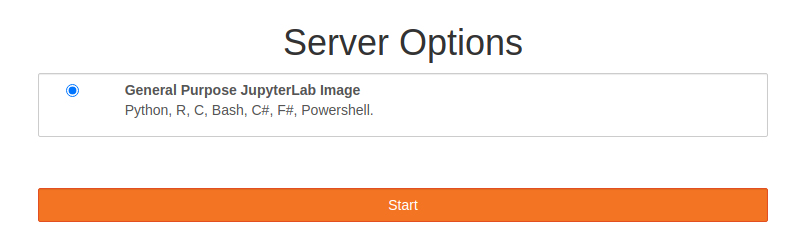

Installation
Downloadable resources/data
Click here to download the shell-lesson-data for the exercises throughout understanding the Shell.
JupyterHub
- Navigate to JupyterHub
- an online environment where you can code and explore the Shell. >>
- Login to JupyterHub using your CCCU user account credentials. >>
- Start your server... >>  >>
- Once server has started Right Click File Browser view and create a new folder called
NOS>> - Double Click
NOSand select the upload files icon to upload theshell-lesson-data.zip. Alternatively you can drag theshell-lesson-data.zipfrom your host machine to the file browser in jupyter hub to upload it. >> - Next select from the
Launcherwindow the 'Terminal' icon to load a terminal. >> >>
>> - Now you can navigate to the correct directory using the following commands, note we will be going over what these mean at a later date.
$ cd NOS
You should see something like this on your terminal...$ unzip shell-lesson-data.zip && rm shell-lesson-data.zip
jovyan@jupyter-seb-20blair:~/NOS$ unzip shell-lesson-data.zip
Archive: shell-lesson-data.zip
creating: shell-lesson-data/
creating: shell-lesson-data/exercise-data/
creating: shell-lesson-data/exercise-data/writing/
inflating: shell-lesson-data/exercise-data/writing/LittleWomen.txt
inflating: shell-lesson-data/exercise-data/writing/haiku.txt
creating: shell-lesson-data/exercise-data/animal-counts/
inflating: shell-lesson-data/exercise-data/animal-counts/animals.csv
creating: shell-lesson-data/exercise-data/proteins/
inflating: shell-lesson-data/exercise-data/proteins/ethane.pdb
inflating: shell-lesson-data/exercise-data/proteins/propane.pdb
inflating: shell-lesson-data/exercise-data/proteins/cubane.pdb
inflating: shell-lesson-data/exercise-data/proteins/octane.pdb
inflating: shell-lesson-data/exercise-data/proteins/methane.pdb
inflating: shell-lesson-data/exercise-data/proteins/pentane.pdb
creating: shell-lesson-data/exercise-data/creatures/
inflating: shell-lesson-data/exercise-data/creatures/basilisk.dat
inflating: shell-lesson-data/exercise-data/creatures/unicorn.dat
inflating: shell-lesson-data/exercise-data/creatures/minotaur.dat
extracting: shell-lesson-data/exercise-data/numbers.txt
creating: shell-lesson-data/north-pacific-gyre/
inflating: shell-lesson-data/north-pacific-gyre/NENE02040A.txt
inflating: shell-lesson-data/north-pacific-gyre/NENE01843A.txt
inflating: shell-lesson-data/north-pacific-gyre/goostats.sh
inflating: shell-lesson-data/north-pacific-gyre/NENE01729A.txt
inflating: shell-lesson-data/north-pacific-gyre/NENE02018B.txt
inflating: shell-lesson-data/north-pacific-gyre/NENE02043A.txt
inflating: shell-lesson-data/north-pacific-gyre/NENE01751A.txt
inflating: shell-lesson-data/north-pacific-gyre/NENE02040Z.txt
inflating: shell-lesson-data/north-pacific-gyre/NENE01812A.txt
inflating: shell-lesson-data/north-pacific-gyre/NENE01971Z.txt
inflating: shell-lesson-data/north-pacific-gyre/NENE02043B.txt
inflating: shell-lesson-data/north-pacific-gyre/goodiff.sh
inflating: shell-lesson-data/north-pacific-gyre/NENE01843B.txt
inflating: shell-lesson-data/north-pacific-gyre/NENE01751B.txt
inflating: shell-lesson-data/north-pacific-gyre/NENE01978B.txt
inflating: shell-lesson-data/north-pacific-gyre/NENE01729B.txt
inflating: shell-lesson-data/north-pacific-gyre/NENE01978A.txt
inflating: shell-lesson-data/north-pacific-gyre/NENE02040B.txt
inflating: shell-lesson-data/north-pacific-gyre/NENE01736A.txt
Orgainising Files
Having uncompressed that file it is time to explore what is there.
There are files here for Marine biology specifically DNA.
- A directory called north-pacific-gyre, which will contain the data files from the assay machine, and the data processing scripts.
- Each of the physical samples is labelled according to the lab's convention with a unique ten-character ID, such as 'NENE01729A'.
- This ID is what is used in the collection log to record the location, time, depth, and other characteristics of the sample, so this is the reason for file naming conventions.
- Since the assay machine's output is plain text, the files are name as follows NENE01729A.txt, NENE01812A.txt, and so on.
-
Change directory into
shell-lesson-dataand list the contents:- Prompt before:
> jovyan@jupyter-seb-20blair:~/NOS$ - Command to run:
$ cd shell-lesson-data - Prompt after command:
jovyan@jupyter-seb-20blair:~/NOS/shell-lesson-data$
- Prompt before:
-
Now list the directory contents
-
Command:
$ ls -
Output:
exercise-data north-pacific-gyre
-
-
Now lets looking inside one of these child directories.
-
Using the following command:
$ ls north-pacific-gyre/ -
This command is a lot to type, but you can let the shell do most of the work through what is called tab completion. If you type:
$ ls nor -
and then presses Tab (the tab key on the keyboard), the shell automatically completes the directory name for you:
$ ls north-pacific-gyre/ -
Pressing Tab again does nothing, since there are multiple possibilities:
-
Pressing Tab twice brings up a list of all the files.
-
-
If you add G and press Tab again, the shell will append 'goo' since all files that start with 'g' share the first three characters 'goo'.
$ ls north-pacific-gyre/goo- To see all of those files, she can press Tab twice more.
$ ls north-pacific-gyre/goo goodiff.sh goostats.sh -
You can also use some a special character to act as wildcard:
- Type the following:
$ ls north-pacific-gyre/*.txt- The
*is a kind of placeholder represented by a single character, which can be interpreted as a number of literal characters or an empty string. It is often used in file searches so the full name need not be typed. So here we are matching zerp or more charcters hence the output, where anything matching the file paht.txt.
north-pacific-gyre/NENE01729A.txt north-pacific-gyre/NENE01978A.txt north-pacific-gyre/NENE01729B.txt north-pacific-gyre/NENE01978B.txt north-pacific-gyre/NENE01736A.txt north-pacific-gyre/NENE02018B.txt north-pacific-gyre/NENE01751A.txt north-pacific-gyre/NENE02040A.txt north-pacific-gyre/NENE01751B.txt north-pacific-gyre/NENE02040B.txt north-pacific-gyre/NENE01812A.txt north-pacific-gyre/NENE02040Z.txt north-pacific-gyre/NENE01843A.txt north-pacific-gyre/NENE02043A.txt north-pacific-gyre/NENE01843B.txt north-pacific-gyre/NENE02043B.txt north-pacific-gyre/NENE01971Z.txt -
You count manually how many of these files there are or simply pipe
|(Shift + \, next to the Z key), into the commandwc.note
-lis a lowercase L, which tells thewc(word count) command to count the number of lines returned, or number of files$ ls north-pacific-gyre/*.txt | wc -l 17 -
What about the number of lines in one of those files?
- Well you could supply one of the files to
wc:
$ wc north-pacific-gyre/NENE02018B.txt 240 240 3517 - Well you could supply one of the files to
-
Where the output is read as number of: newlines, words, and bytes counts for each FILE
-
Using
wc --help, will return as useful message to the you explaining in summary how to use it. Give it a go. -
Use
wcon every file.txtfile in thenort-pacific-gyre/directory.Answer
$ wc north-pacific-gyre/*.txtOutput:
300 300 4406 north-pacific-gyre/NENE01729A.txt 300 300 4400 north-pacific-gyre/NENE01729B.txt 300 300 4371 north-pacific-gyre/NENE01736A.txt 300 300 4411 north-pacific-gyre/NENE01751A.txt 300 300 4409 north-pacific-gyre/NENE01751B.txt 300 300 4401 north-pacific-gyre/NENE01812A.txt 300 300 4395 north-pacific-gyre/NENE01843A.txt 300 300 4375 north-pacific-gyre/NENE01843B.txt 300 300 4372 north-pacific-gyre/NENE01971Z.txt 300 300 4381 north-pacific-gyre/NENE01978A.txt 300 300 4389 north-pacific-gyre/NENE01978B.txt 240 240 3517 north-pacific-gyre/NENE02018B.txt 300 300 4391 north-pacific-gyre/NENE02040A.txt 300 300 4367 north-pacific-gyre/NENE02040B.txt 300 300 4381 north-pacific-gyre/NENE02040Z.txt 300 300 4386 north-pacific-gyre/NENE02043A.txt 300 300 4393 north-pacific-gyre/NENE02043B.txt 5040 5040 73745 total
-
So how do we see the contents of one or more of these files, well...
- You could open one with a text editor like
nano, but you could modifiy it by mistake. - Return the contents to the command-line:
catlessmore
- You could open one with a text editor like
-
Using
catto concatenate FILE(s) to standard output.$ cat north-pacific-gyre/NENE02018B.txt 0.886228273762 1.37355851009 0.0865651718703 0.111640629084 2.32072028341 ...
-
Using
catfor anything more than 100 lines is a messy, as some terminals/command-lines have a limit on how many lines can be outputted to the terminal. -
So to you could use a command like
lessandmore, use supply the argument--helpto both of those commands to see what they do. -
Once you have done this, use them.
$ less north-pacific-gyre/NENE02018B.txtNote use the
qkey to quit the interactive program
- Another way to out put the contents of a file, is with
headandtail.
-
Use
headand one of the files to see the top line of that file$ head north-pacific-gyre/NENE02018B.txt- Output:
0.886228273762 ... -
try with
tail:$ tail north-pacific-gyre/NENE02018B.txt- Output:
0.259203384504 ... -
Now try to see the first 20 of one file and then the last 5. Remeber to use the
<cmd> --helpto see how to use it:Answer
$ head -n 20 north-pacific-gyre/NENE02018B.txt$ tail -n 5 north-pacific-gyre/NENE02018B.txt -
Now try to get
0.259203384504which is line 1012 ofNENE02018B.txt, using the combinations of head and tail with the pipe|:Answer
$ head -n 1012 north-pacific-gyre/NENE02018B.txt | tail -n 1 -
Try to print the top line from every NENE020..txt file using the wildcard,
*:Answer
$ head -n 1 north-pacific-gyre/NENE0*.txt==> north-pacific-gyre/NENE01729A.txt <== 1.03150932862 ==> north-pacific-gyre/NENE01729B.txt <== 0.646620295293 ==> north-pacific-gyre/NENE01736A.txt <== 2.16404354503 ==> north-pacific-gyre/NENE01751A.txt <== 1.25588561078 ==> north-pacific-gyre/NENE01751B.txt <== 0.974034913671 ==> north-pacific-gyre/NENE01812A.txt <== 0.142961371327 ==> north-pacific-gyre/NENE01843A.txt <== 1.68204275762 ==> north-pacific-gyre/NENE01843B.txt <== 0.490394468866 ==> north-pacific-gyre/NENE01971Z.txt <== 0.0618278658331 ==> north-pacific-gyre/NENE01978A.txt <== 0.0929600007888 ==> north-pacific-gyre/NENE01978B.txt <== 0.200595190005 ==> north-pacific-gyre/NENE02018B.txt <== 0.886228273762 ==> north-pacific-gyre/NENE02040A.txt <== 1.8055719805 ==> north-pacific-gyre/NENE02040B.txt <== 0.616254506154 ==> north-pacific-gyre/NENE02040Z.txt <== 0.0865651718703 ==> north-pacific-gyre/NENE02043A.txt <== 3.68921390564 ==> north-pacific-gyre/NENE02043B.txt <== 0.982953194226